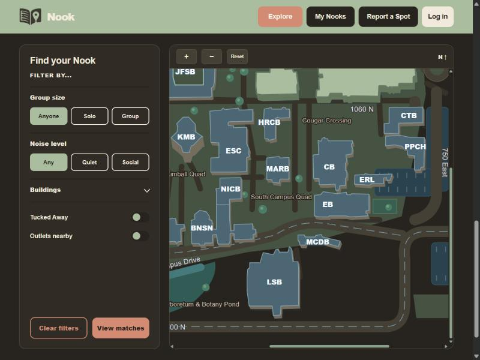

Maintain records
Create, edit and delete rows for every table the app uses, with validation and clear errors.
Nook for BYU · Admin area
Manage buildings, floors, study spots and team access in one place, then drop pins on the digitized floor plans so students walk to the right door.

Create, edit and delete rows for every table the app uses, with validation and clear errors.
Click a floor plan to place a study spot or resource, then fill in its details. Drag to fine-tune or delete a pin right on the plan.
Admins sign in, then unlock with a personal code. The database enforces it, not just this page.
Signed in as . Admin tools unlock for two hours after a correct code.